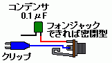

私のエフェクター自作方法【番外編】うまく動作しないとき
2008年11月22日 カテゴリー：私のエフェクター自作方法
自作したエフェクターで音が出ないなどのトラブルにあった方は多いと思います。せっかく作ったものが動かないのはショックなものです。以下にその原因を探るためのチェックリストのようなものを書いてみました。
※火傷等の怪我には充分注意してください！
前提
□ 回路図やレイアウトが正しい
□ 部品は壊れていない
回路図やレイアウトを自分で考えた場合は、絶対に間違ってはいけないので慎重に慎重を重ねます。
熱に弱い部品ですが、ICやトランジスタはソケットを使います。コンデンサも熱に弱いといわれています。ポットやスイッチも壊したことがあります（たぶん熱が原因）。特にポットは最初から値が変だったりするので要注意です。
□ 電池（電源）をつけているか
□ インプットとアウトプットのプラグが逆でないか
□ ソケットに部品を正しい方向に挿しているか
□ ポットやトリマーの設定は適切か（ボリュームが0でないか等）
□ 配線が正しいか（導通しているか）
□ ICソケット、電解コンデンサ、ダイオードなどの方向は正しいか
□ アース（0V）を確認
□ +9Vを確認
□ バイアス電圧などを確認
□ 部品の値を確認
□ 怪しい箇所を半田付けし直す
□ 基板をねじったり部品を押してみたりして半田の不良がないか確認（やりすぎ注意）
どうしても基板上のミスがある場所がわからないときは、入力信号が回路図のどこまで届いているか確認します。ある程度回路に関する知識は必要かもしれません。
下図のようなものを準備します。

クリップをアースにつないでジャックにケーブルを挿し、壊れてもいいアンプにつなぎます。
アンプのボリュームを0に
↓
コンデンサの先を基板の半田面に当てる
↓
ギターを鳴らす
↓
アンプのボリュームを徐々に上げる
↓
音が出ればそこまでは信号がいっていることになります。
これを繰り返していけば怪しい箇所が特定できます。
どうしてもダメなときには
□ 回路の勉強をしてみる
□ しばらく放置してもう一度チェックし直す
□ 一から作り直す
□ なかったことにする
どうしても助けて欲しい！という方はメールフォームから管理人へお問い合わせください。可能な限り対応いたします。